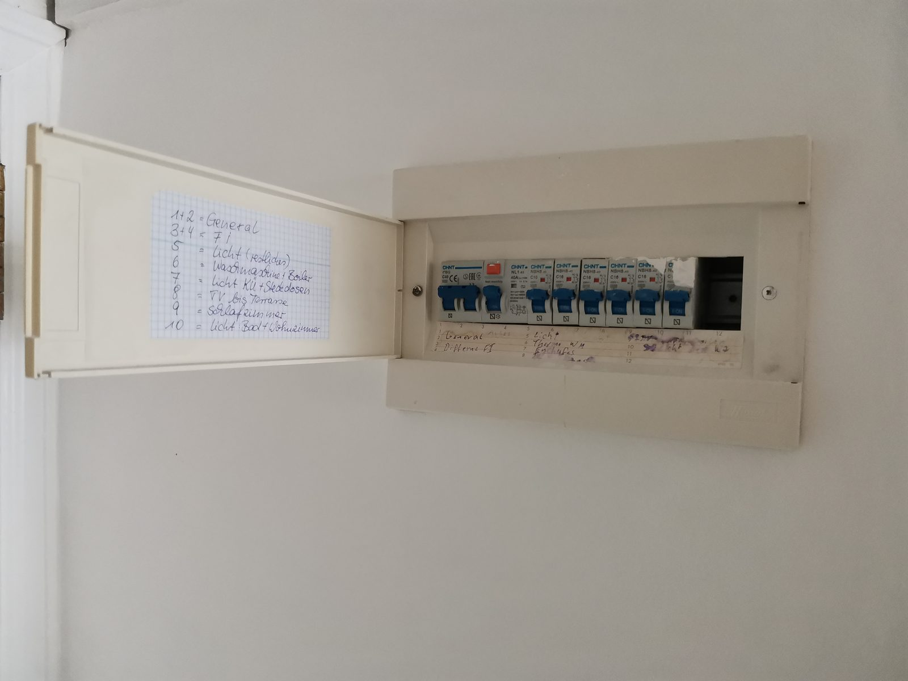
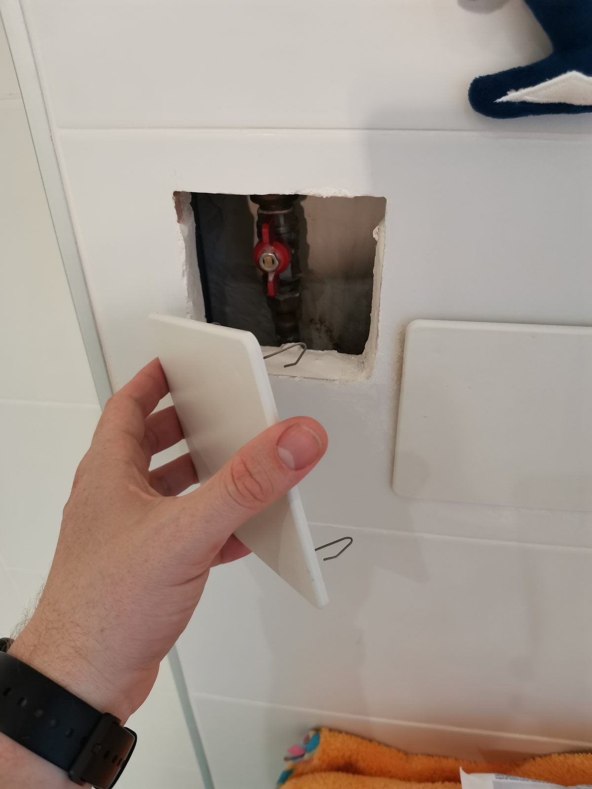

Check-in
- Strom anAlle Sicherungen im Sicherungskasten neben der Tür nach oben
stellen.

- Wasser anIm Badezimmer den kleinen Wanddeckel nahe der Dusche aus der
Wand ziehen und den Hahn vertikal stellen.

- Use & ReplaceAlles im Apartment kann benutzt, gegessen, getrunken und
verbraucht werden – die Sachen dann bitte einfach ersetzen.
- AnkommenTüre öffnen, Ausblick genießen, einen Túnel trinken. 🙂